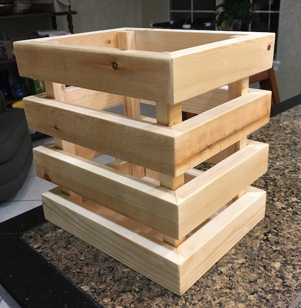

Furniture projects
A woodworker's go-to gift for all occasions.
2019
Pine trash can
I don't know if a trash can counts as furniture. But this is my website.
This is a design I came up with after looking at similarly designed bins. The bottom is 3/8" plywood. The frame itself is built with salved pine from some Ikea bed slats I picked up on bulk trash day in my neighborhood.
I built this mostly to practice my miters with a miter jig that I built based on Steve Ramsey's design. I finished it with a few coats of spray on lacquer.
